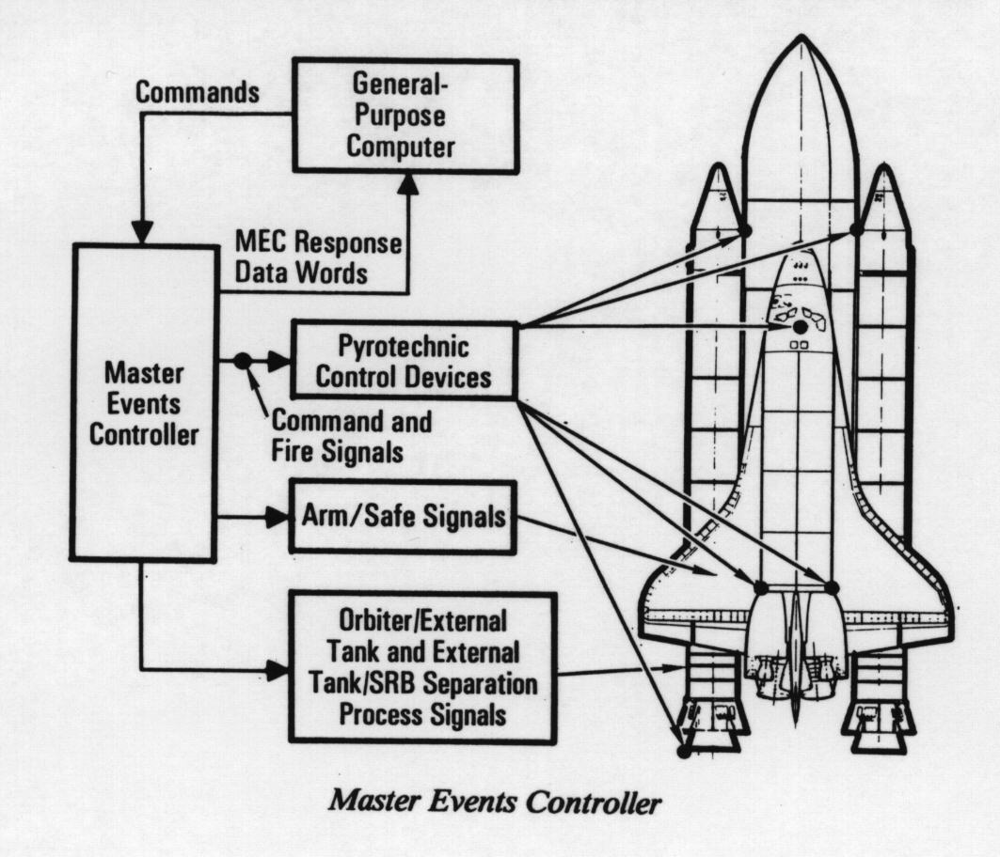

DATA PROCESSING SYSTEM

The space shuttle vehicle relies on computerized control and monitoring for successful performance. The data processing system, through the use of various hardware components and its self-contained computer programming (software), provides the vehicle with this monitoring and control. The DPS hardware consists of five general-purpose computers for computation and control, two magnetic tape mass memory units for large-volume bulk storage, a time-shared computer data bus network consisting of serial digital data buses (essentially party lines) to accommodate the data traffic between the GPCs and space shuttle vehicle systems, 19 orbiter and four solid rocket booster multiplexers/demultiplexers to convert and format data from the various vehicle systems, three space shuttle main engine interface units to command the SSMEs, four multifunction CRT display systems used by the flight crew to monitor and control the vehicle and payload systems, two data bus isolation amplifiers to interface with the ground support equipment/launch processing system and the solid rocket boosters, two master events controllers, and a master timing unit. The software stored in and executed by the GPCs is the most sophisticated and complex set of programs ever developed for aero space use. The programs are written to accommodate almost every aspect of space shuttle operations, including orbiter checkout at Rockwell's Palmdale, Calif., assembly facility; space shuttle vehicle prelaunch and final countdown for launch; turnaround activities at the Kennedy Space Center.and eventually Vandenberg Air Force Base; control and monitoring during launch ascent, on-orbit activities, entry and landing; and aborts or other contingency mission phases. A multicomputer mode is used for the critical phases of the mission, such as launch, ascent, entry, landing and aborts. Some of the DPS functions are as follows: support the guidance, navigation and control of the vehicle, including calculations of trajectories, SSME thrusting data and vehicle attitude control data; process vehicle data for the flight crew and for transmission to the ground and allow ground control of some vehicle systems via transmitted commands; check data transmission errors and crew control put errors; support annunciation of vehicle system failures and out-of-tolerance system conditions; support payloads with flight crew/software interface for activation, deployment, deactivation and retrieval; process rendezvous, tracking and data transmissions between payloads and the ground; and monitor and control vehicle subsystems.